ESP32 NETWORK CLOCK
ESP32 NETWORK CLOCK
EMBEDDED SYSTEMS | PCB DESIGN | ESP32 | C++
GITHUBMy ESP32 Network Clock project is my first major self-directed computer engineering project. This project gave me the drive to accelerate learning in my major and learn many skills that allowed me to find my path in the field. It led me through PCB design, hardware design, embedded systems, programming with C++, and most of all how to stay motivated.
The clock is a 12 character alphanumeric display with shift-register based driver logic designed by me. It uses an ESP32-S3 and the Arduino framework.
| TYPE | COMPONENT | QUANTITY |
|---|---|---|
| MICROCONTROLLER | Espressif ESP32-S3-DevKitC-1 | 1 |
| SHIFT REGISTER | Texas Instruments 74HC595 | 5 |
| SOURCE DRIVER | Toshiba TBD62783AFG | 2 |
| SINK DRIVER | Toshiba TBD62083AFG | 2 |
| MOSFET | 2N7002 (N-Channel) | 1 |
| DISPLAY MODULE | Lite-On LTP-587HR (16-Seg) | 12 |
| ROTARY ENCODER | Bourns PEC11-R | 1 |
| BUTTON | 6x6mm Tactile Switch | 2 |
| STATUS LED | Kingbright WP113IDT (Red) | 3 |
| LIGHT SENSOR | Vishay TEPT5700 (Phototransistor) | 1 |
| CONNECTOR | JST-XH 9-Pin Header (Vertical) | 1 |
| RESISTOR | 100Ω (0805 SMD) | 17 |
| RESISTOR | 1kΩ (0603 SMD) | 3 |
| RESISTOR | 10kΩ (0603 SMD) | 2 |
| CAPACITOR | 100nF Ceramic (0603 SMD) | 6 |
Schematic for just the display and display driver logic.

For my project I needed a PCB for the display modules. The Lite On LTP-587HR did not fit on a traditional breadboard in the correct orientation and wiring was confusing enough to warrant me learning KiCad, which has become one of my favorite softwares to use. This started with the 12C-LTP-587HR board pictured in its second revision on the right.
This was the first PCB I ever designed and I am rather proud of it. The first revision was a learning experience where I did not understand how DIP module pin numbers work, and I incorrectly guessed the location of the pins on the PCB. Luckily, I was able to spin up a second revision quickly that resulted in a fully functional board.
Many images of the project at this stage show the shift registers rubber-banded to the board. This is due to the sockets I chose allowing the shift registers to come out of their slots over time, as is fixed with the parts used in revision 3.

The third revision of the board resolves two major problems with the previous revision. First, the display modules themselves are moved much closer together for improved legibility. This was paired with my improved understanding of footprints in KiCad. Secondly, transistor arrays are used to improve stability and brightness in the display segments, utilizing ESP32 safe 3.3v logic to drive 5v to the display. A larger header is also used for these new pins, and one additional transistor is used for the decimal point.
This board will also incorperate the improved sockets to prevent needing to rubber band the board together.

This project originated from a desire to build a minimalist desk clock that didn't sacrifice functionality. My goal was to create a fully standalone device, avoiding the complexity of external apps or web portals by implementing comprehensive on-device controls.
The design evolved from simple Arduino LCD kits and off-the-shelf I2C modules to a fully custom driver implementation. I chose to design my own discrete driver logic for two reasons: educational value given through a deeper understanding of shift registers and multiplexing logic, as well as control over digit spacing, form factor, and brightness properties.
During the testing of the second revision, I found notable brightness inconsistencies when driving the LEDs directly from shift registers. To solve this, I redesigned the architecture to include TBD62783 (Source) and TBD62083 (Sink) drivers. This upheld the ESP32's logic levels and allowed stable 5V for consistent brightness.


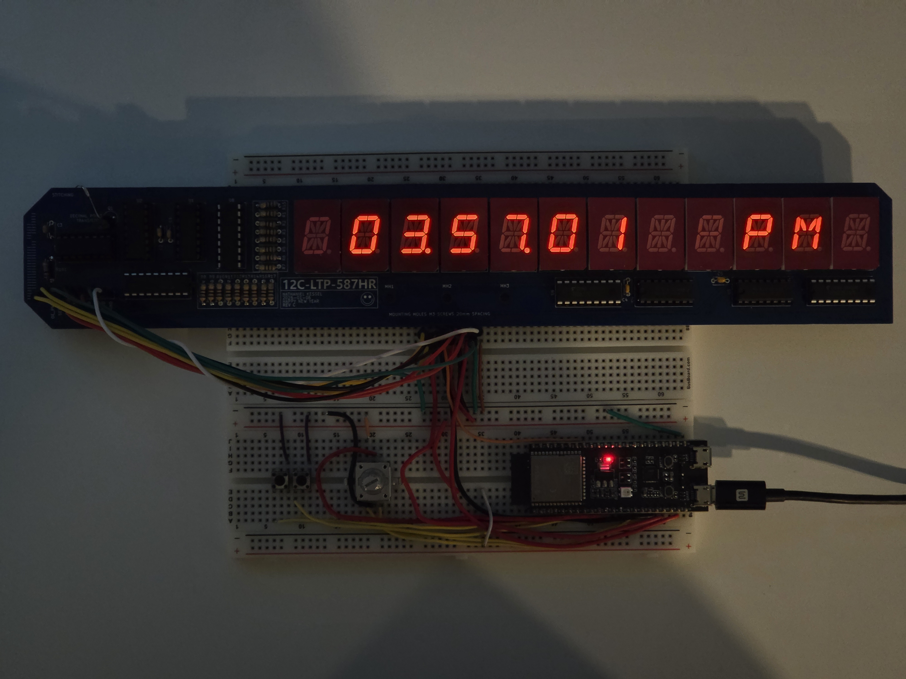
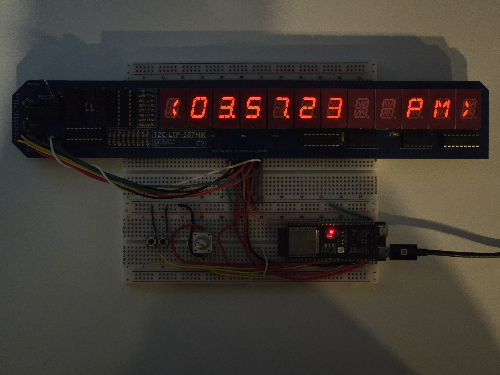
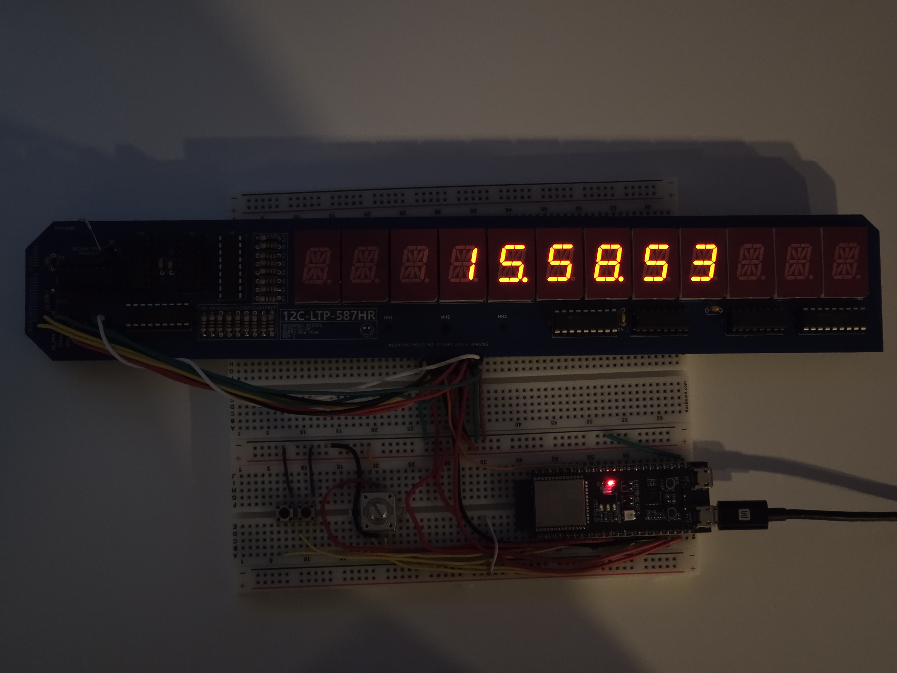
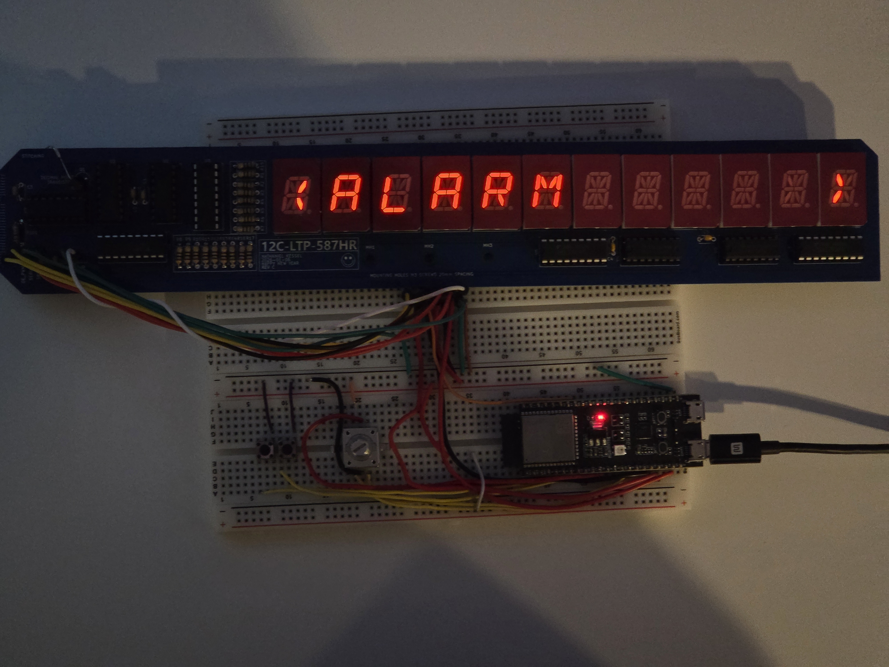
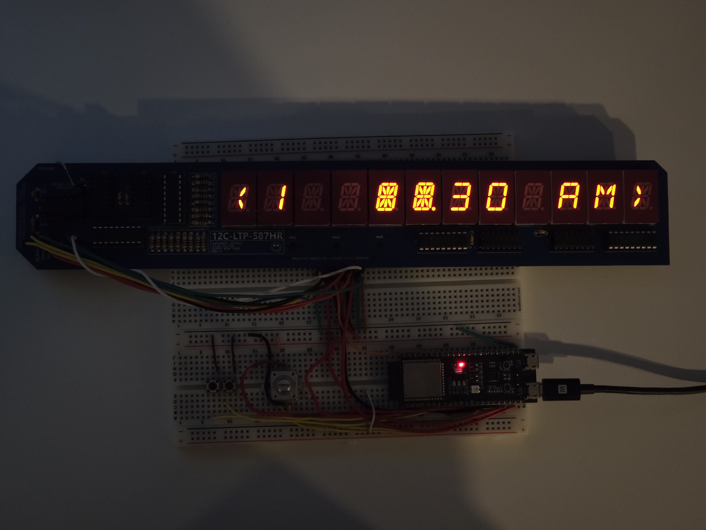
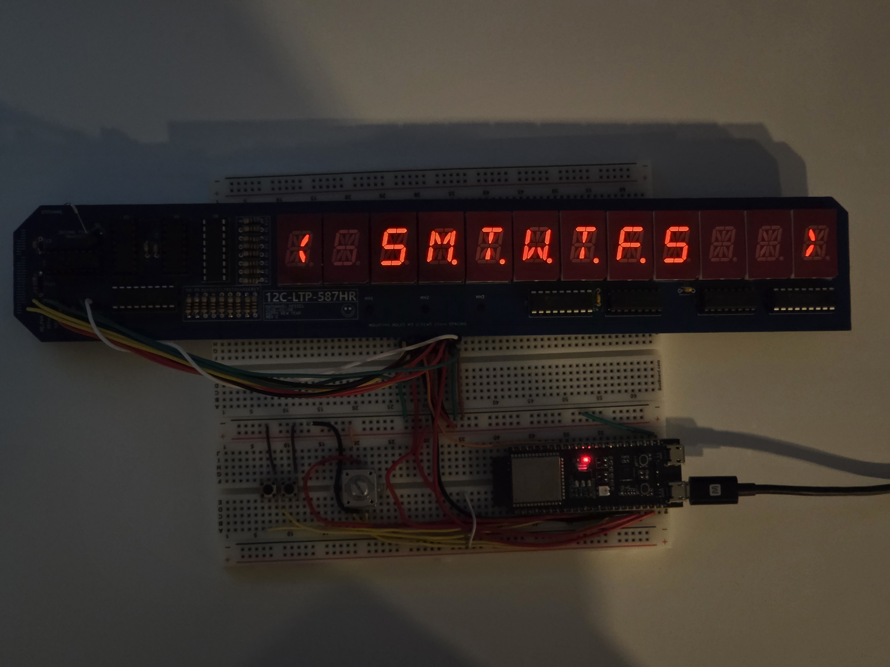
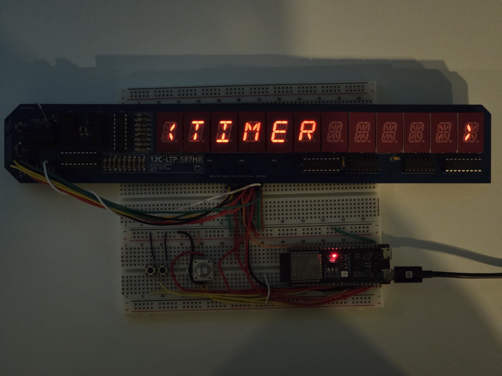
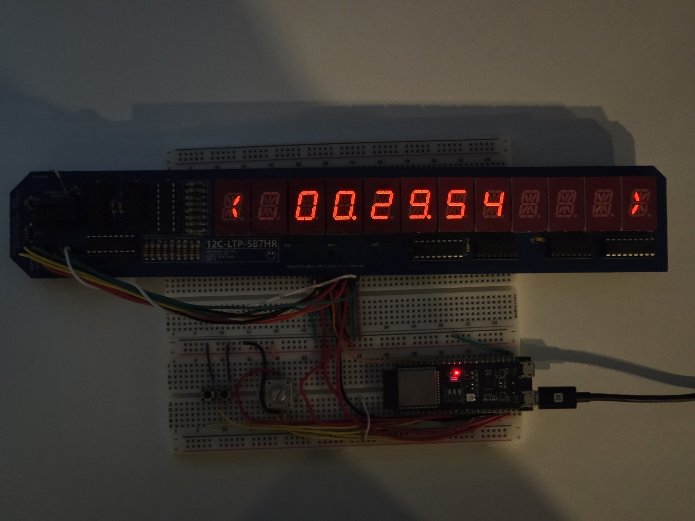
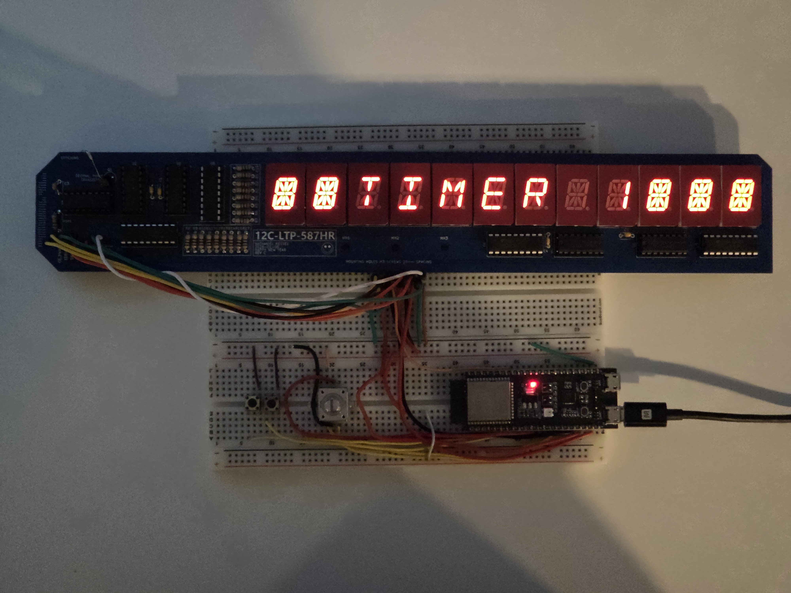
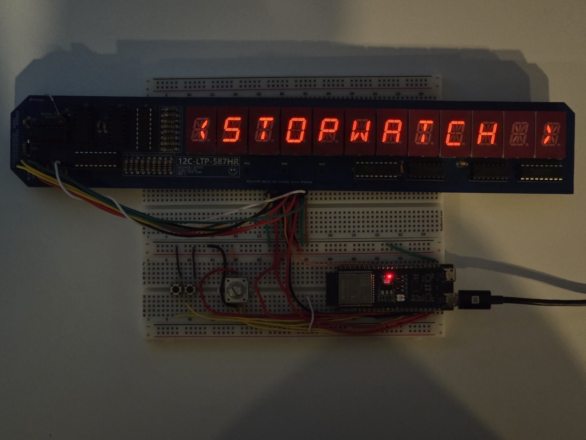
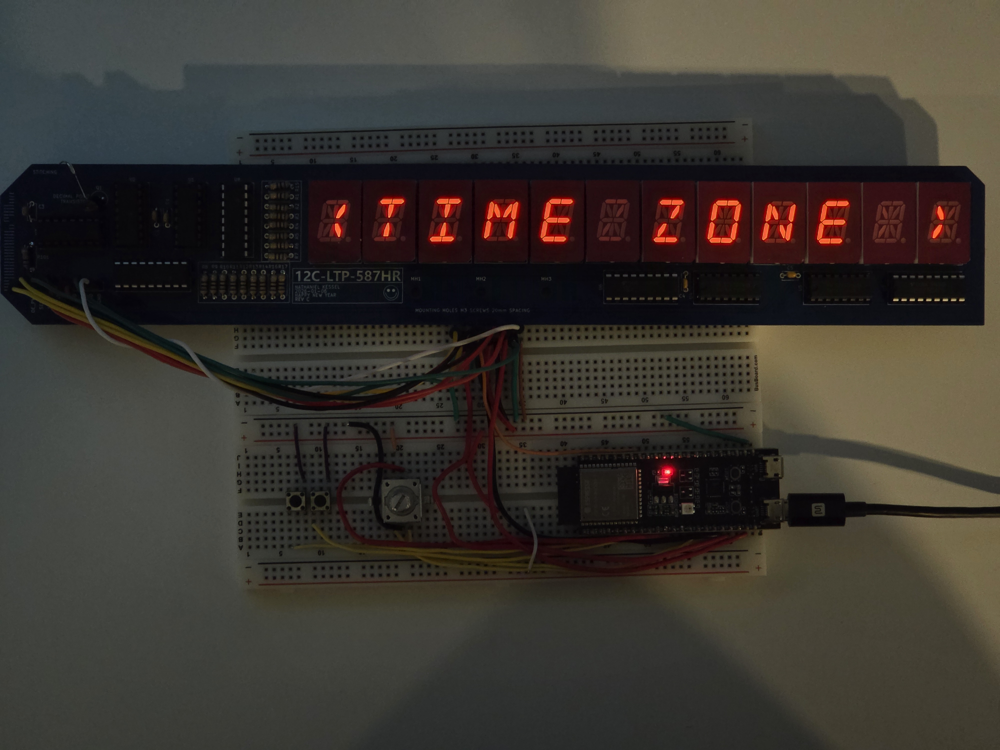
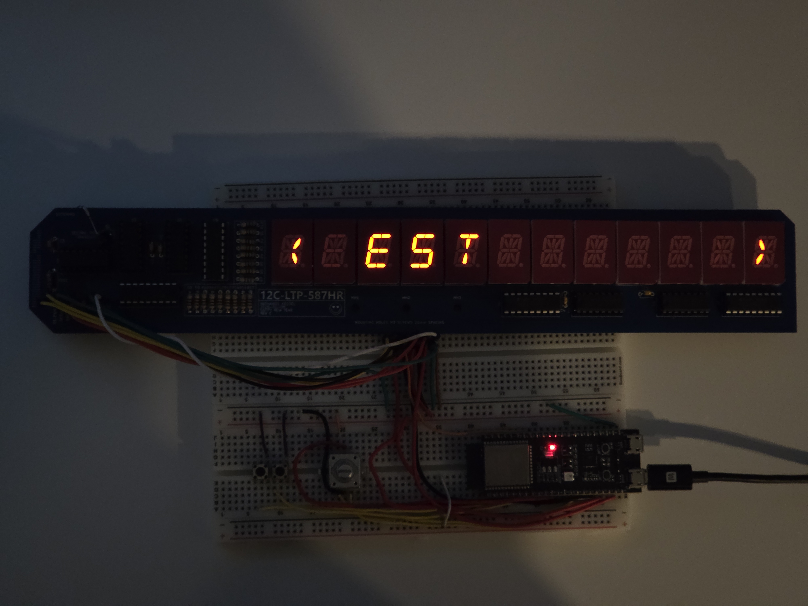